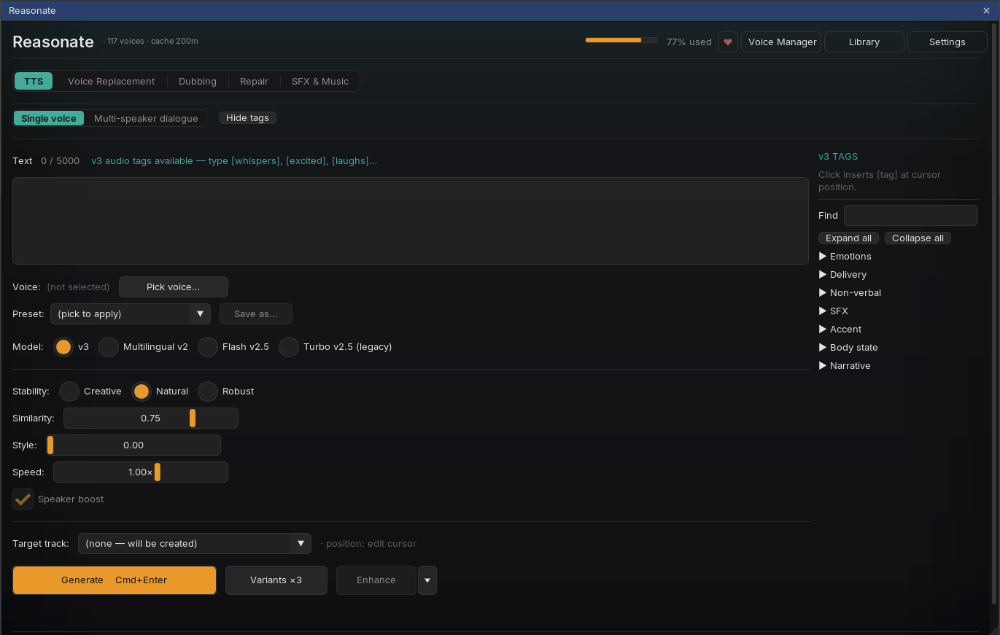
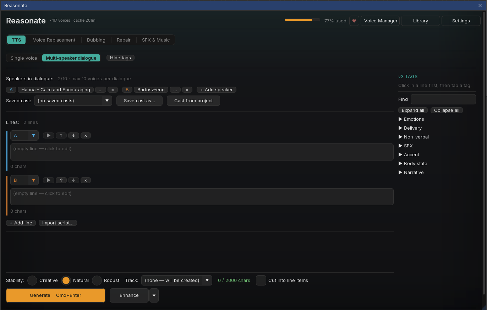

Sub-mode 1Single voice

-
Write (up to 5000 characters)
Type or paste into the editor. With the v3 model you can add audio tags like
[whispers]or[laughs]anywhere in the text for expressive delivery. -
Pick voice and model
Pick voice... opens the same picker used everywhere in Reasonate. Choose a model for the job: v3 for expressiveness and audio tags, Multilingual v2 for stable long-form narration, Flash v2.5 when speed and price matter most.
-
Shape the delivery
Stability (v3 offers three presets: Creative / Natural / Robust), similarity, style and speed sliders, plus speaker boost. Save any combination as a named preset and recall it from the dropdown later.
-
Generate
Press Generate or Cmd+Enter. The item lands on the target track (or on a new track if none is picked) at the edit cursor, and the cursor jumps to its end so you can keep writing the next line. Variants x3 renders three different reads as takes of one item.
Each target track remembers the last voice, model and settings used on it. Come back a week later, select the track, and the panel is set up the way that voice-over track expects.
History and takes
Generated items on the current target track are listed under the editor. From there you can play any of them, cycle takes (◀ 2/3 ▶), lock an item against accidental changes, or Regen it - a fresh read with a new seed appended as another take. Right-click a row for extras: delete a take, delete the item, or reveal the audio file on disk.
Sub-mode 2Multi-speaker dialogue
Switch to Multi-speaker dialogue to write scenes: a cast of named speakers, lines in order, one Generate producing a single natural-sounding conversation (ElevenLabs text-to-dialogue, v3).

Build the cast
- + Add speaker creates a slot (A, B, C...); click the name to rename, pick a voice per speaker. Up to 10 voices per dialogue.
- Right-click a speaker chip for per-speaker voice settings (stability, similarity, style, speed).
- Save cast as... stores the lineup for reuse across projects; Cast from project pulls characters and voices from this project's Cast Registry - the cast you built in Dubbing or Repair is one click away.
Write the lines
- Each line has a speaker selector and a text field; reorder with ↑↓, remove with ×. The whole dialogue can total 2000 characters (the counter keeps you honest).
- ▶ on a line renders a quick solo preview of just that line in the speaker's voice - useful for checking a voice fit before generating the scene.
- Import script... reads a
.txt/.mdfile in the commonName: lineformat and builds speakers and lines for you. - Audio tags work here too - click into a line, then tap a tag from the palette.
Generate and iterate
One press renders the whole conversation as a single item. After generating:
- Line playback - the ▶ next to each line now plays that line inside the generated take (Reasonate aligns text to audio automatically). Move the REAPER playhead through the item and the matching line lights up.
- Line regeneration - edit one line and re-generate just that line. With Cut into line items the dialogue is split into per-line items and the new read replaces its block; otherwise patches land on a dedicated "TTS - line takes" track under the original.
- Enhance works on dialogue as well, per line, with the same words-preserved guarantee.
- Split per speaker - optional setting that splits a generated dialogue onto one track per speaker (via speech-to-text diarization) for individual mixing.
Dialogue uses the v3 model exclusively, and line patching maps lines to the last generated take by order - if you add, remove or reorder lines after generating, re-generate the whole dialogue instead of patching.